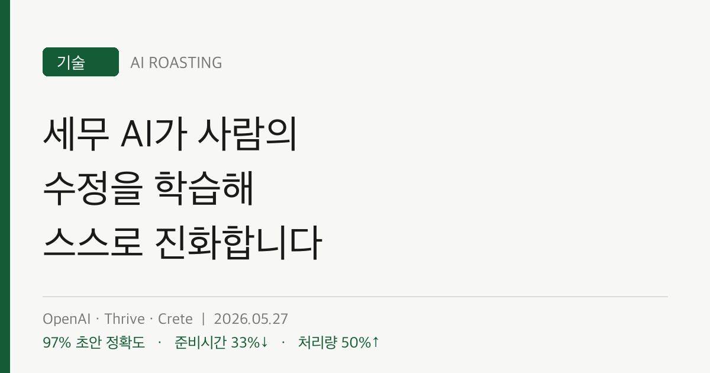

OpenAI가 Thrive·Crete와 함께 세무 신고를 작성하는 자기개선 AI 에이전트를 만들었습니다.
회계사가 고친 내용을 Codex가 평가셋과 코드 수정으로 바꿔, 시스템이 운영 중에 스스로 좋아집니다.
6주 만에 75% 이상 정확히 채운 신고서 비율이 25%에서 86%로 올랐습니다.
당신 조직의 AI는 6주 만에 25%에서 86%로 좋아졌습니까, 작년 그대로입니까?
차이는 더 똑똑한 모델이 아니라 피드백 루프입니다.
대부분의 조직은 AI가 좋아지는 순간을 새 모델 출시일로 생각합니다. 이 사례는 다릅니다. 시스템은 매주 운영 현장에서 좋아졌습니다. 모델은 그대로였습니다.
비결은 단순합니다. 회계사가 AI의 실수를 고칠 때마다, 그 수정이 다음 버전의 학습 재료가 됩니다. 당신 조직에서 사람이 AI 결과물을 고친 흔적은 지금 어디에 쌓이고 있습니까. 대개는 버려집니다.
세무와 회계는 AI 자동화의 마지막 영역으로 여겨졌습니다. 복잡한 신고 1건은 데이터 입력에만 약 8시간이 걸립니다(OpenAI, 2026). OpenAI는 2025년 12월 Thrive Holdings 지분을 확보했습니다. Crete의 회계법인 30여 곳이 6개월간 시범 운영을 맡았습니다.
핵심은 세무가 아니라 '운영 중에 스스로 좋아지는 시스템'이라는 작동 모델입니다.
첫째, 자기개선은 모델 교체가 아니라 피드백 루프에서 나옵니다. 이 시스템은 세 가지 입력으로 스스로 개선됩니다. 전문가 피드백, 생산 트레이스, 그리고 Codex의 자동 반복입니다. 사람이 고친 것이 자동으로 평가 기준이 되고, Codex가 자주 발생하는 오류를 코드로 고칩니다.
여기서 모델은 바뀌지 않았습니다. 바뀐 것은 데이터 추출과 항목 매핑 계층의 코드입니다. 더 똑똑한 AI를 기다린 것이 아니라, 현장의 수정을 자산으로 바꾸는 회로를 만든 것입니다.
자기개선 루프: 3단계 구조
1. 전문가 피드백: 세무 전문가가 가장 영향이 큰 개선 지점을 짚습니다.
2. 생산 트레이스: 원자료부터 제출까지 전 과정과 회계사의 수정을 그대로 기록합니다.
3. Codex 반복: 반복되는 문제를 평가셋으로 바꾸고, Codex가 코드를 고쳐 다시 검증합니다.
현장 수정 → 평가셋 → 코드 수정 → 재배포 → 현장 수정
엔지니어는 전체 구조를 지키고, Codex는 추출·매핑 계층을 반복 개선합니다.
둘째, 숫자가 6주 만에 움직였습니다. 출시 시점에는 신고서의 25%만 '75% 이상 정확히 채움' 기준을 넘었습니다. 6주 뒤 그 비율은 86%가 됐습니다(OpenAI, 2026). 시범 기간에 7,000건을 처리했고, 준비 시간은 건당 약 33% 줄었습니다. 처리량은 약 50% 늘었고, 초안 정확도는 최대 97%에 도달했습니다.
주목할 점은 확장 방향입니다. 시스템은 W-2, 1099 같은 단순 문서에서 시작했습니다. 이후 K-1과 임대 부동산 명세가 얽힌 복잡한 신고로 넘어갔습니다. 더 복잡한 신고일수록 시간 절감 효과가 컸습니다.
셋째, 사람과 AI의 분업선이 다시 그어졌습니다. 이 구조에서 사람의 역할은 줄지 않고 이동합니다. 엔지니어는 시스템 전체 구조를 책임지고, Codex는 반복 작업인 추출·매핑 코드를 고칩니다. 회계사는 단순 입력에서 벗어나 검토와 판단에 집중합니다. 자동화가 일을 없앤 것이 아니라, 사람을 더 어려운 판단 쪽으로 밀어 올렸습니다.
Codex에 주어지는 일감은 명확합니다. 코드 저장소, 평가 데이터, 관련 문서, 원본 트레이스, 기대 결과, 검토된 발견을 함께 받습니다. 사람이 문제를 정의하고, AI가 반복을 처리하는 분업입니다.
숫자로 환산하면 방향이 분명해집니다. 복잡한 신고 1건은 데이터 입력에만 약 8시간이 걸립니다(OpenAI, 2026). 건당 약 33%를 줄이면 신고 1건마다 2.6시간 안팎을 회수합니다.
반대로 이 루프가 없는 조직은 같은 실수를 매번 사람이 다시 고칩니다. 회계사 100명이 매주 같은 유형의 오류를 손으로 잡는다면, 그 수정 노동은 어디에도 축적되지 않습니다. 자기개선 루프의 진짜 비용 절감은 처리 속도가 아니라 '같은 실수를 반복하지 않는 것'에 있습니다.
| 지표 | 결과 | 경영 리더에게 주는 의미 |
|---|---|---|
| 정확도 (75% 채움 기준) | 25% → 86% (6주) | 개선이 출시가 아니라 운영에서 일어납니다 |
| 초안 정확도 | 최대 97% | 사람 검토는 여전히 필수입니다 |
| 건당 준비 시간 | 약 33% 단축 | 복잡한 업무일수록 절감 폭이 큽니다 |
| 처리량 | 약 50% 증가 | 같은 인력으로 더 많은 일을 처리합니다 |
출처: OpenAI (2026), 시범 운영 결과.
지금 직원들이 AI 결과물을 손으로 고친 흔적은 대부분 버려집니다. 'AI 초안 → 사람 최종본'의 차이를 한곳에 기록하는 규칙부터 세웁니다. 이 차이가 자기개선 루프의 연료입니다. (이번 주)
현장에서 반복되는 실수 10가지를 골라, 각각을 '입력 → 기대 출력' 쌍으로 정리합니다. 프롬프트 예시: "다음은 우리 AI가 자주 틀리는 사례 10건입니다. 각 사례의 올바른 출력과 오류 원인을 정리하고, 이를 자동 검증할 수 있는 평가 항목으로 만들어 주세요." (2주일)
Codex나 Claude Code 같은 코딩 에이전트에 코드, 평가셋, 관련 문서, 실제 처리 기록, 기대 결과를 함께 입력합니다. 문제만 던지지 말고 '판단 근거'까지 주는 것이 반복 개선의 조건입니다. (1개월)
피드백 루프는 자율 운영이 아닙니다. 초안 정확도 97%는 100%가 아닙니다. 세무는 작은 오류도 비용이 큽니다. 이 시스템도 회계사의 검토를 전제로 작동합니다. '스스로 좋아진다'를 '사람이 필요 없다'로 읽으면 안 됩니다.
운영 데이터가 없으면 루프가 돌지 않습니다. 이 사례의 진짜 자산은 모델이 아니라 수만 건의 신고와 수정 기록입니다. 트레이스를 쌓아둔 조직만 같은 회로를 만들 수 있습니다. 데이터를 버려온 조직은 출발선부터 다릅니다.
좁은 영역의 성공이 전 영역의 성공은 아닙니다. 세무 신고는 규칙이 명확하고 정답을 확인할 수 있는 작업입니다. 정답이 모호하거나 책임 소재가 복잡한 업무에서는 같은 루프가 그대로 작동하지 않습니다. 자기개선이 잘 도는 업무인지 먼저 가려야 합니다.
AI를 끌어올린 것은 새 모델이 아니라, 사람의 수정을 자산으로 바꾼 루프였습니다. 당신 조직의 수정은 지금 쌓이고 있습니까, 버려지고 있습니까?
Codex: OpenAI의 코딩 에이전트입니다. 코드 저장소와 평가 데이터를 받아 코드를 직접 수정하고 검증합니다. 이 사례에서 반복 오류를 고치는 역할을 맡았습니다.
생산 트레이스 (Production Trace): 원자료 입력부터 최종 제출까지, AI가 처리한 전 과정과 사람의 수정을 그대로 남긴 기록입니다. 자기개선 루프의 핵심 데이터입니다.
평가셋 (Eval): AI가 맞게 작동하는지 자동으로 검증하는 '입력과 기대 출력' 쌍의 묶음입니다. 현장 오류를 평가셋으로 바꾸면 같은 실수를 다시 검출할 수 있습니다.
자기개선 루프 (Self-improvement Loop): 사람의 수정이 평가셋과 코드 수정으로 이어지고, 다시 현장에서 검증되는 순환 구조입니다. 모델 교체 없이 시스템이 좋아지게 합니다.
K-1: 동업·신탁 등에서 발생하는 소득을 보고하는 미국 세무 양식입니다. W-2나 1099보다 처리가 복잡해, 자동화 난도가 높은 신고 유형을 대표합니다.
- OpenAI. (2026, May). Building self-improving tax agents with Codex [Article]. OpenAI. (원문 보기 ↗)
- StartupHub.ai. (2026, May). OpenAI's Codex Powers Self-Improving Tax Software [Article]. StartupHub.ai. (원문 보기 ↗)
- Crypto Briefing. (2026, May). OpenAI and Thrive develop self-improving tax AI with 97% accuracy [Article]. Crypto Briefing. (원문 보기 ↗)